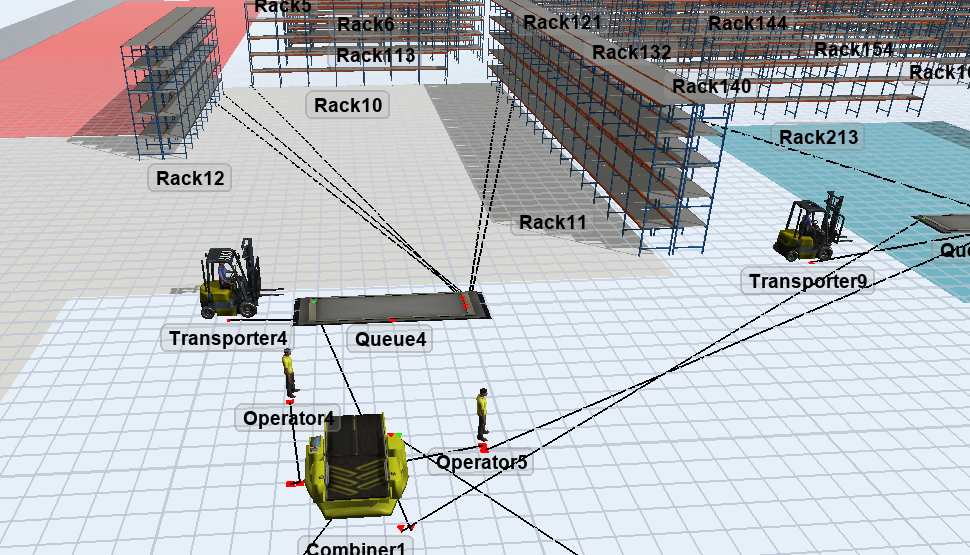
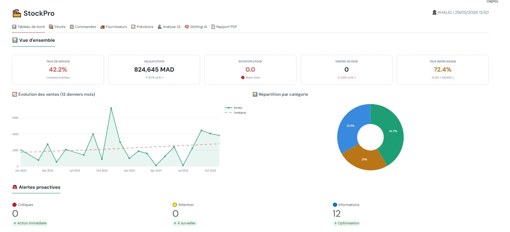

Turning warehouse and reliability data into decisions a team can act on.
Final-year Industrial Engineering student (ENSA Safi), focused on supply chain, stock management and flow optimization — from a Gemba walk and a DMAIC diagnostic to a working simulation model.
Supply Chain & Logistics
Flow optimization, inventory management, warehouse efficiency
Maintenance & Reliability
Failure analysis, Pareto/Ishikawa, preventive maintenance planning
Lean & Continuous Improvement
DMAIC, Kaizen, PDCA, root-cause problem solving
Data & Simulation
Python, SQL, discrete-event and Monte Carlo modeling
Featured work


How I work through a problem
Observe
Floor walk, process mapping, data collection at the source
Measure
Quantify the gap — lead time, downtime, defect rate
Analyze
Pareto, Ishikawa, 5 Why to isolate root causes
Improve
Model and test scenarios before recommending a change
Report
Document results honestly, including what didn't work
Tools & methods
Let's talk
Open to internships and first opportunities in supply chain, procurement and stock management — and to a PFE from February 2027.